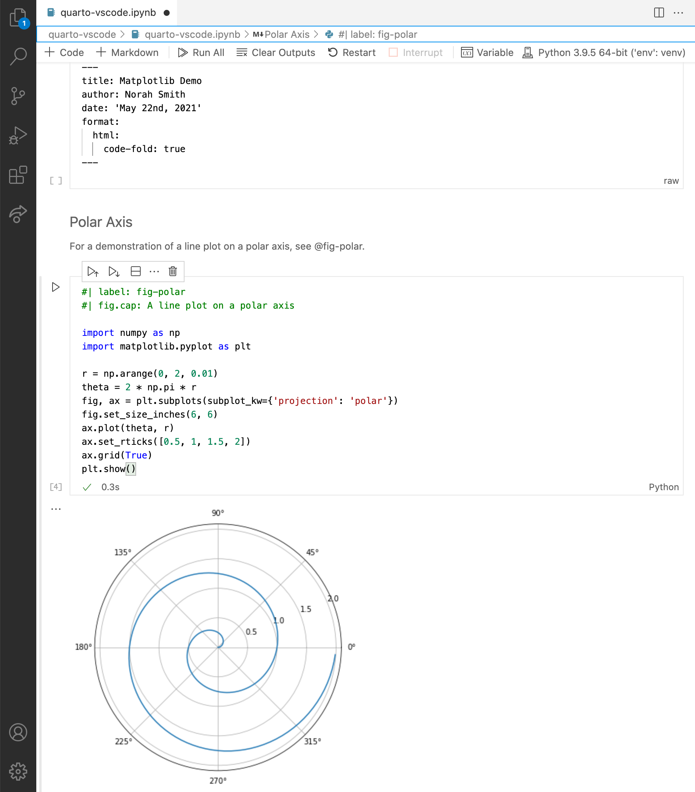
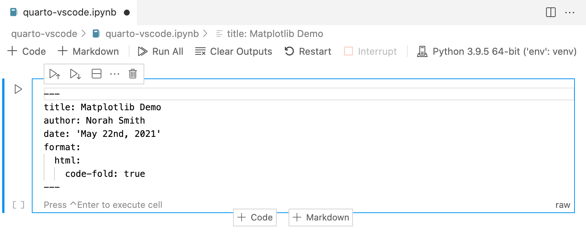
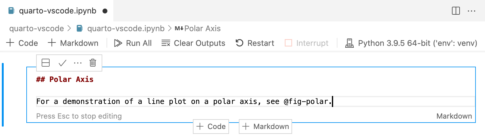
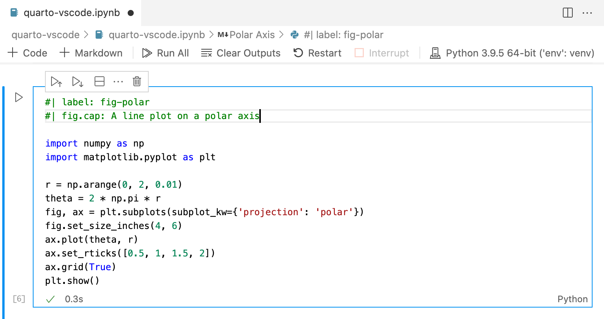

VS Code
Overview
Quarto can render Jupyter notebooks represented as plain text (.qmd) or as a normal notebook file (.ipynb). One benefit of using .ipynb is that you can use the VS Code Jupyter Notebook UI as your editor.
Here is the “Hello, Quarto” example from the homepage inside VSCode:

If you look at the source code you’ll note that YAML options were provided both at the top of the document and within the code cell. We’ll describe working with YAML options in more detail below.
Workflow
The ideal workflow for authoring Quarto notebooks in VS Code is to run the quarto preview command from within a terminal:
quarto preview notebook.ipynbThe notebook will be rendered and a web browser with a “live preview” opened. Position this browser so that you can see it as you edit and save the notebook:

Every time you save within VS Code the preview will be automatically updated. You can use quarto preview for both HTML and PDF output.
In the screenshot above you’ll note that we ran quarto preview inside a VS Code terminal window—this is generally recommended so that you can see progress and error messages when renders occur.
Preview uses the default format specified within the document—to use an alternate format pass the --to option to quarto preview. For example:
quarto preview notebook.ipynb --to pdfNote that if you are authoring a book or website you can also use quarto preview on the project directory, which will create a live preview for the entire project.
Render without Preview
You can render a notebook (or group of notebooks) without previewing them using the quarto render command:
quarto render notebook.ipynbUse the --to argument to render to a specific format:
quarto render notebook.ipynb --to docxYAML Front Matter
The first cell of your notebook should be a Raw cell that contains the document title, author, and any other options you need to specify. Note that you can switch the type of a call to Raw using the cell type menu at the bottom right of the cell:

In this example we specify that we want code to appear collapsed by default. There are YAML options to control many other aspects of document rendering. See the documentation on Authoring and Output Formats for additional details.
Markdown Cells
Here’s the underlying code for the markdown cell:

Note that a Quarto cross-reference (@fig-polar) is included in the markdown. Any valid Pandoc markdown syntax can be included in markdown cells.
Output Options
Quarto uses leading comments with a special prefix (#|) to denote cell options. Here we specify the label and fig-cap options so that the plot generated from the cell can be cross-referenced.

Note that options must appear at the very beginning of the cell. As with document front-matter, option names/values use YAML syntax.
There are many output options available, including options to optionally hide code, warnings, and/or output. See the documentation on Output Outputs for additional details.
Cell Execution
Note that when rendering an .ipynb Quarto will not execute the cells within the notebook by default (the presumption being that you already executed them while editing the notebook). If you want to execute the cells you can pass the --execute flag to render:
quarto render notebook.ipynb --executeYou can also specify this behavior within the notebook’s YAML front matter:
---
title: "My Notebook"
execute:
enabled: true
jupyter: python3
---There are many other execution options available (e.g. to control caching, optimizing kernel start-up time, etc.). Learn more about these options in Execution Options.
Plain Text Editing
It’s also possible to edit Jupyter notebooks in a plain-text markdown format. You might prefer this if there is more narrative than code in your notebook or if you want to use a file format that is more version control friendly.
Here is the plain text markdown version of the notebook used in the previous examples:
---
title: "Matplotlib Demo"
author: "Norah Smith"
date: "May 22nd, 2021"
format:
html:
code-fold: true
jupyter: python3
---
## Polar Axis
For a demonstration of a line plot on a polar axis, see @fig-polar.
```{python}
#| label: fig-polar
#| fig-cap: "A line plot on a polar axis"
import numpy as np
import matplotlib.pyplot as plt
r = np.arange(0, 2, 0.01)
theta = 2 * np.pi * r
fig, ax = plt.subplots(subplot_kw={'projection': 'polar'})
ax.plot(theta, r)
ax.set_rticks([0.5, 1, 1.5, 2])
ax.grid(True)
plt.show()
```Note that we’ve added the jupyter: python3 option to the YAML front matter to indicate which Jupyter kernel to render with. You would render this document with:
quarto render basics-jupyter.qmdMarkdown files with embedded code chunks should use the file extension .qmd.
If you are doing most of your work in .qmd files you should consider using RStudio, which includes full support for editing .qmd files that use Python and Jupyter (including code completion, cell-at-a-time execution, and side-by-side preview). See the article on using RStudio for additional details.
Converting Notebooks
You can convert between .ipynb and .qmd representations of a notebook using the quarto convert command. For example:
quarto convert basics-jupyter.ipynb
quarto convert basics-jupyter.qmdSee quarto convert help for additional details on converting notebooks.